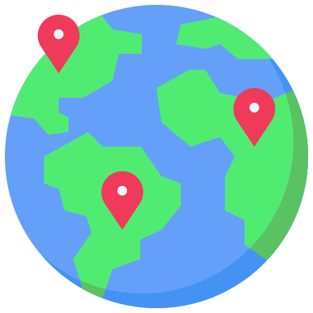
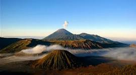
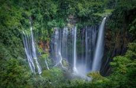

|
||
| Beranda | Menu Wisata | Pariwisata |

Menu WisataBerikut adalah objek wisata menarik di Indonesia
 Gunung BromoGunung Bromo merupakan salah satu tempat wisata terkenal yang berada di Jawa Timur. |
Kawah IjenKawah Ijen merupakan salah satu tenpat wisata terkenal yang berada di Jawa Timur. |
 Tumpak SewuAir Terjun Tumpak Sewu merupakan tempat wisata terkenal di Jawa Timur. |
contact person: Jejalah Wisata +6285855959463
email: rie.val028@gmail.com
instagram: Instagram